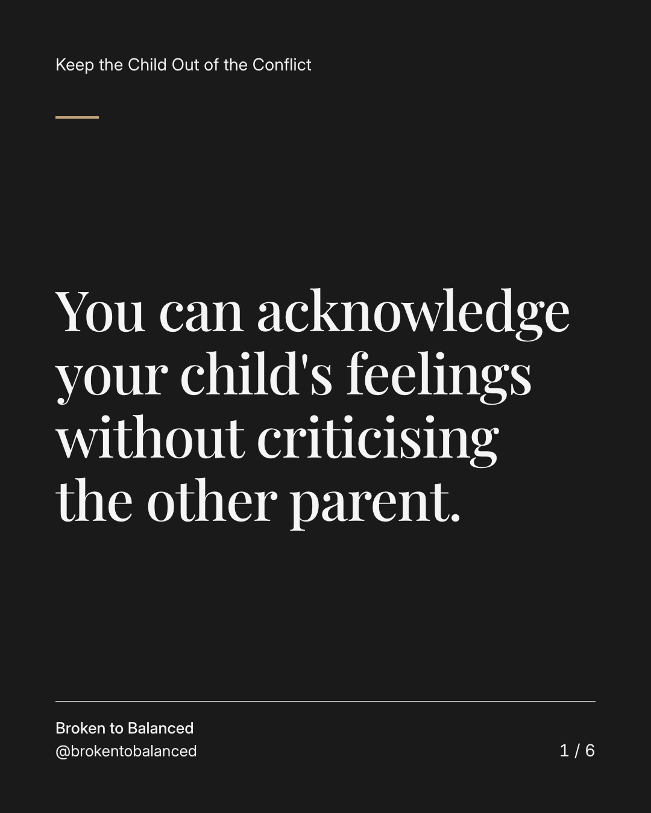
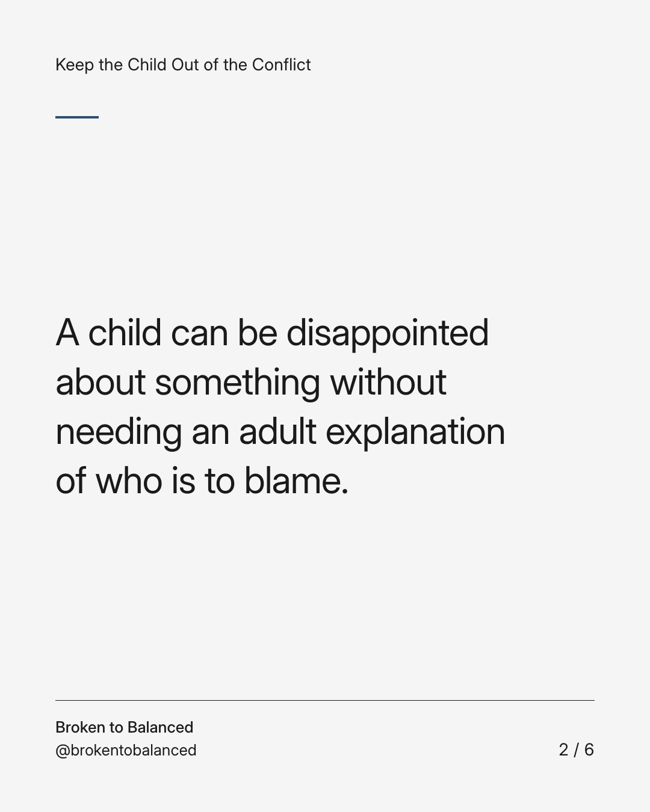
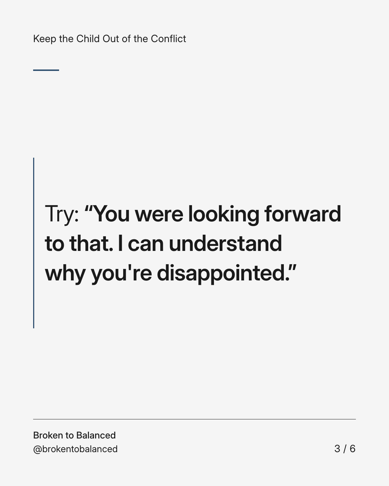
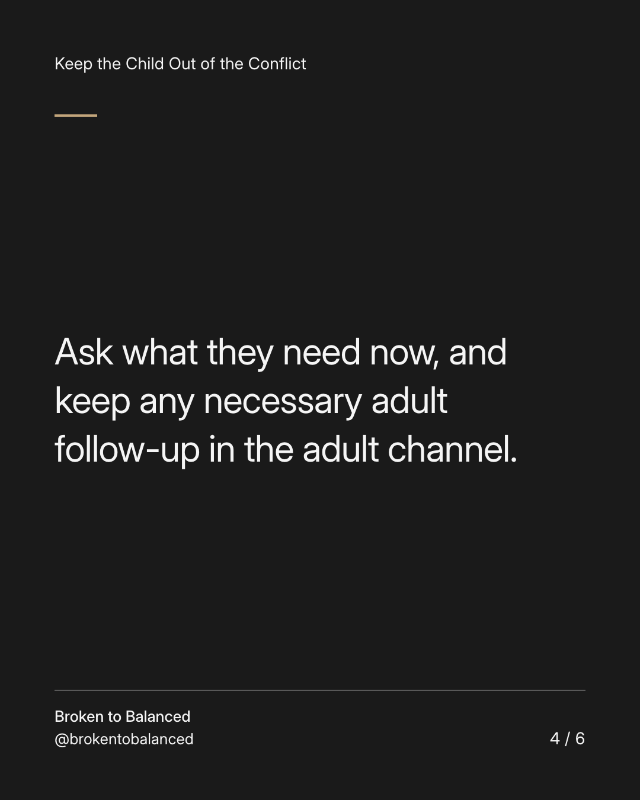
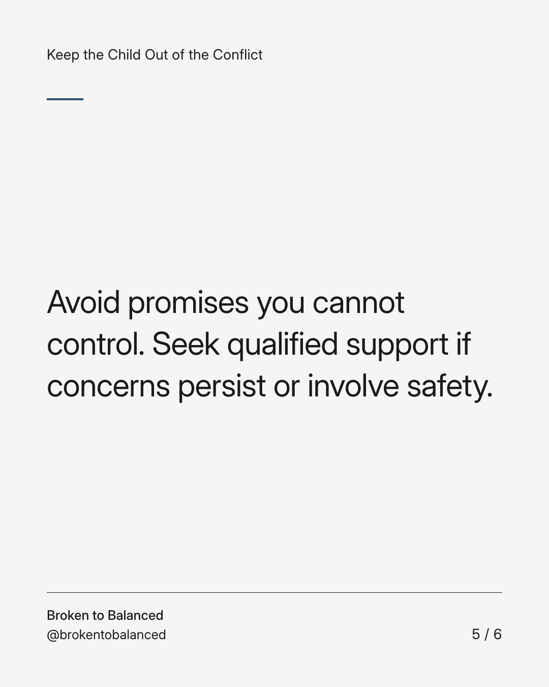
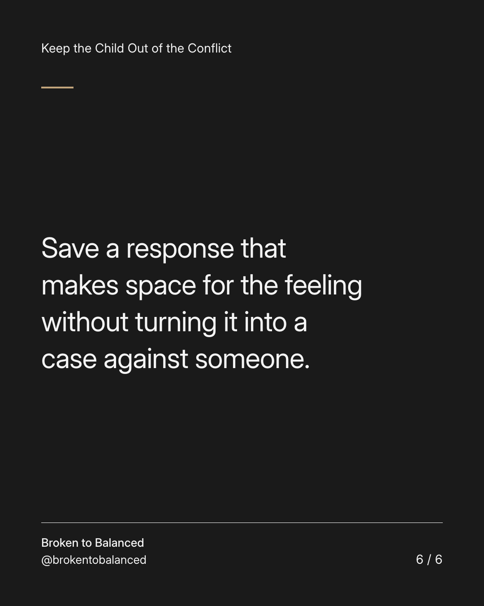

Exact text and accessibility text
You can acknowledge your child's feelings without criticising the other parent.
Slide 1 of 6. You can acknowledge your child's feelings without criticising the other parent.


Exact text and accessibility text
A child can be disappointed about something without needing an adult explanation of who is to blame.
Slide 2 of 6. A child can be disappointed about something without needing an adult explanation of who is to blame.


Exact text and accessibility text
Try: “You were looking forward to that. I can understand why you're disappointed.”
Slide 3 of 6. Try: “You were looking forward to that. I can understand why you're disappointed.”


Exact text and accessibility text
Ask what they need now, and keep any necessary adult follow-up in the adult channel.
Slide 4 of 6. Ask what they need now, and keep any necessary adult follow-up in the adult channel.


Exact text and accessibility text
Avoid promises you cannot control. Seek qualified support if concerns persist or involve safety.
Slide 5 of 6. Avoid promises you cannot control. Seek qualified support if concerns persist or involve safety.


Exact text and accessibility text
Save a response that makes space for the feeling without turning it into a case against someone.
Slide 6 of 6. Save a response that makes space for the feeling without turning it into a case against someone.
Exact caption
Plain-text fallback: select and copy the caption.